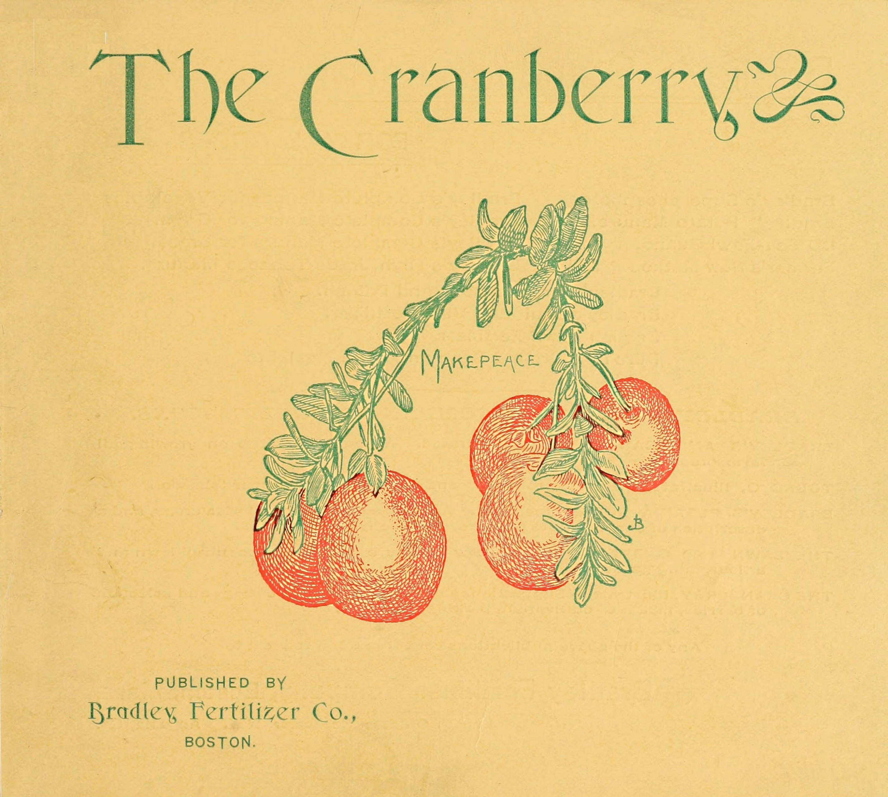
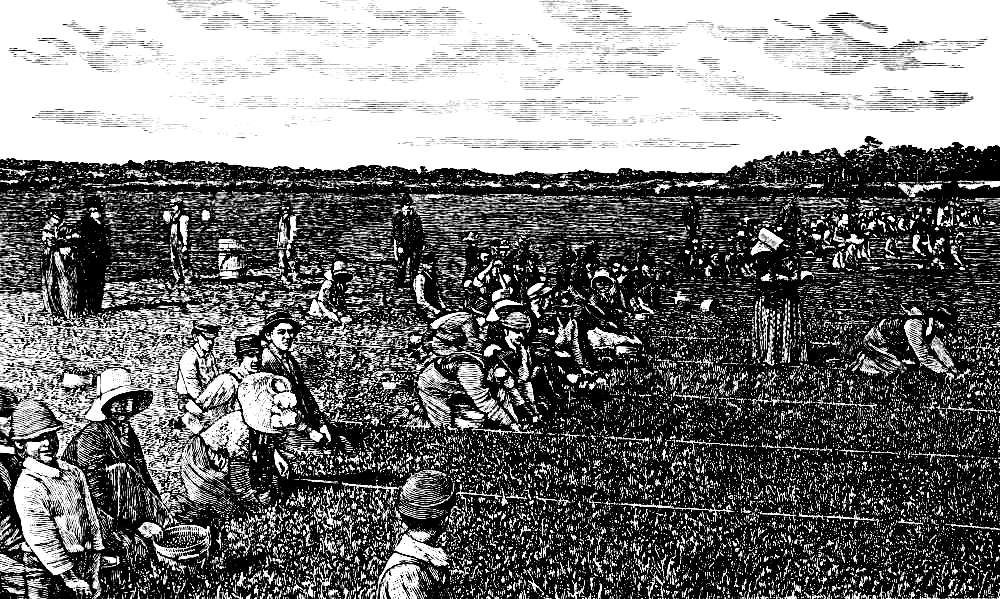
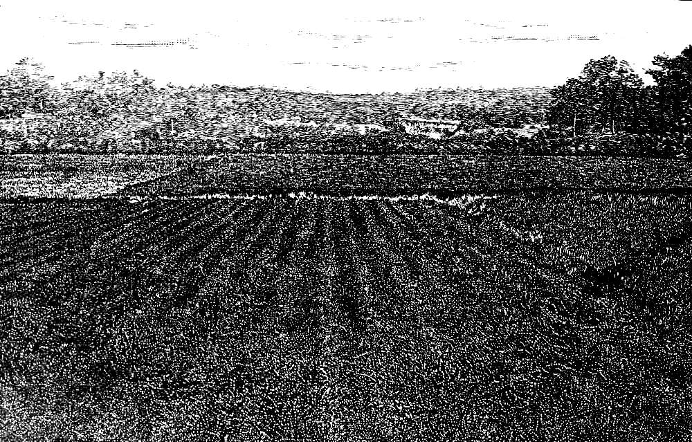
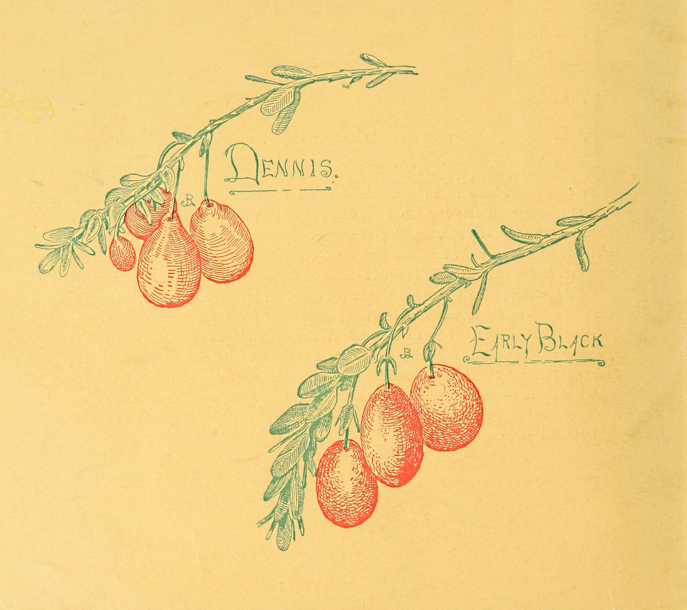

Bradley’s Standard Fertilizers
FOR ALL CROPS.
| Bradley’s Superphosphate. | Bradley’s Complete Manure for Vegetables. |
| Bradley’s Potato Manure. | Bradley’s Complete Manure for Grain. |
| BD Sea-Fowl Guano. | Bradley’s Complete Manure for Grass. |
| Farmer’s New Method Fertilizer. | Bradley’s High Grade Tobacco Manure. |
| Bradley’s Ground Bone and Potash. |
| Bradley’s Fruit and Vine Fertilizer. |
| English Lawn Fertilizer. |
| Pure Fine Ground Bone and Bone Meal, Etc. |
BRADLEY FERTILIZER COMPANY’S PUBLICATIONS.
BRADLEY’S AMERICAN FARMER, Illustrated. A concise treatise
on growing all farm crops.
TOBACCO, Illustrated. How to grow, cure and market cigar
wrapper tobacco.
BRADLEY’S FLORIDA BOOK, Illustrated. A treatise on growing
Florida crops, and a description of our fertilizers prepared
especially for that trade.
THE LAWN AND GARDEN. Hints on how to secure and keep a
beautiful lawn and a flourishing garden.
THE CRANBERRY, Illustrated. Suggestions as to the preparation
of bogs and selection of berries, modes of cultivation,
picking, shipping, &c.
Any of the above publications sent free upon request to
Bradley Fertilizer Company, Boston, Mass.
Branch Offices: Rochester, N. Y. Augusta, Ga.
[Pg 1]
PUBLISHED BY
Bradley Fertilizer Co.
BOSTON
[Pg 2]

Picking Cranberries on the Old Colony Co.’s Cranberry Bog at South Yarmouth, Mass.
West Dennis, Mass., Oct. 19, 1891.
Having had the superintendency of preparing and setting to vines what is called the “Old Colony cranberry bog,” which contains about 25 acres, I have had occasion to use the different kinds of commercial fertilizers sold on the market, and of them all I now use the Bradley.
It has proved a great help in starting our new vines, giving them a vigorous growth and bringing the bog into bearing much earlier than would have been the case had Bradley’s fertilizer not been applied.
We think very highly of your fertilizer, and recommend its use by cranberry-growers generally. The photograph you have of our cranberry bog will give some idea of what we are doing.
REUBEN BAKER, Sup’t.
R. A. BAKER, Treas.
Copyrighted by Bradley Fertiliser Co., 1892.
[Pg 3]
The Cranberry.
This book is not intended to be a scientific or elaborate treatise upon the Cranberry, but rather a book of practical suggestions, and a summary of helpful hints that may prove of benefit to those who undertake to grow this fruit.
The methods of growing Cranberries vary with localities and growers, and are undoubtedly in an experimental state at the present time. The original Cranberry grower was the owner of some wild and uncultivated patch where, in a natural condition, the berries (receiving no attention until picking time) were gathered “at halves,” meeting little or no market beyond the limits of the locality in which they grew.
The modern grower has found the application of improved methods of cultivation and fertilization to pay liberally with the Cranberry, as with every other crop, and it should be his endeavor, through all available methods, to reduce the cost of growing and increase the yield of berries per acre, giving special attention to such culture as may the better secure the keeping quality of the fruit.
In order to do this, the grower may have to lay aside his preconceived notions as to the best methods of growing and fertilization, and possibly even[Pg 4] discard some which have in years past been approved by leading growers. By a careful selection of varieties best adapted to each particular locality, or frequently by a larger increase in the depth of sand upon the bog, and then by the greatest care in all that pertains to the picking and packing of the fruit, he will be enabled to maintain for the Cape berries a foremost reputation as “keepers” among those who handle this valuable crop. Too little attention has heretofore been paid to this essential feature, and quantity rather than quality has been sought. When secured, the berries, as a general thing, are hurriedly packed at the bog, usually warm from the vines, and so, oft-times, they are almost ruined before reaching a market. This practice is largely responsible for the prejudice of some dealers against Cape berries.
Again, improved methods of cultivation by which an increased production, with improved quality, may be secured, are certainly desirable to every individual grower; though the present enormous crop would hardly seem to warrant a larger acreage, yet, at the same time, it behooves every grower to make as productive as possible (in view of the great expenditure) each acre already under cultivation.
The matter here presented is the result of thorough investigation into the methods of cultivation as practised by the most successful growers, and we believe it presents facts to the grower which will prove well worthy of his careful attention.
BRADLEY FERTILIZER CO.
[Pg 5]
It is popularly supposed that the Cranberry flourishes upon Cape Cod because of the salt sea sand of which the Cape is so largely composed. This theory, however, is erroneous, as it has been proved that even on Cape Cod the Cranberry will not flourish except under certain other favorable conditions.
The first inquiry, then, is, What kind of land is preferable for a bog? The best growers select a laurel, maple, or cedar swamp, so situated that it can be easily flowed with water at any time when this may seem necessary. They select a swamp in preference to a meadow, because it is found in practice that a meadow always produces considerable coarse grass detrimental to the crop, which does not grow in the swamps.
Again, it is proved that a swamp on which wood has grown has a better bottom than the average meadow, as it is largely composed of decayed foliage, which has for many years dropped from the trees, and has gradually become a rich, friable soil, usually free from either weeds or grass.
Some growers believe that it is not essential to have the bog so situated that it can be covered by water; but, while there are some very fine dry Cranberry bogs of this description, if an early frost or the fire-worm strikes the crop at a vital time, it causes an entire failure, which could have been prevented had there been a chance of promptly flowing the bog.
[Pg 6]
The Cranberry bog is usually prepared in late fall, winter, or early spring, when the ground is partially frozen, as it is more easily cleared at this time, and cheaper labor is obtainable.
The first step in preparing the bog is to mow off, with a bush scythe, all the small brush and undergrowth. We are then ready to get rid of the trees. Experience has proved that the cheaper way is to cut the roots of the large trees, and then by means of tackle, in case they do not fall by their own weight, pull them over to the ground. This saves many days’ labor, which would be necessary if the trees were cut down above the ground and the stumps then dug out.
The refuse materials should be gathered into heaps, and, when dried, burned upon the bog; but great care is necessary in burning not to allow the moss and turf, of which the bog is composed, to get on fire; for when once fairly started, it is nearly impossible, except by flowing the bog, to extinguish the flames.
These first steps in clearing the bog must be done in the best possible manner, preferably by day labor, under the direct care of a watchful foreman, as the ultimate success of the Cranberry bog depends very largely upon the thoroughness with which all of the tree and bush roots are removed.
After the surface of the bog has been thoroughly cleaned off, it is cut into[Pg 7] squares, about eighteen inches across, by means of a turf-axe, which is a thin, hatchet-shaped bladed implement, with a stout, hickory handle, about thirty inches long. This axe is utilized for cutting the tough, undergrowing roots, sure to be found just below the surface of the soil.
The usual method is to cut across the bog in parallel lines eighteen inches apart, and again at right angles in parallel lines in the same manner, thus leaving the turf in square blocks about eighteen inches square. Two men with long-handled, four-pronged bog-hooks follow the cutters, pulling over the turf, which, after the ditching is finished, should be chopped up, and so rendered suitable for making the surface as smooth as possible, when the work of final grading is completed.
We are now ready for ditching; the manner and methods necessary to secure the best possible drainage being subject, of course, to such varied conditions as to render it difficult to describe. But if there were but three essential features of special importance, two of them would be drainage.
All of the ditches should be dug with flaring banks, so as to prevent caving in of the sides of the ditch, and thus making constant trouble. A ditch, in any case, around the entire bog is an essential feature in drainage, and to carry-off the cold surface water, as well as a preventive of much difficulty in cultivation, etc.
If the ditches are thoroughly well made they will need but little repairing or cleaning, and here as elsewhere in preparing the bog the most careful attention on the part of the superintendent will prove the cheapest in the end.
[Pg 8]
After the ditches are completed, the bog must be graded until it is as smooth and level as a lawn. In grading the bog the levels must be run in such a manner that it can be easily flooded with water, since sometimes it may be desirable to do this as expeditiously as possible, and the necessary arrangements to do this should be provided at this time.
North Harwich, Mass., Oct. 19, 1891.
I have been in the habit of using Bradley’s Fertilizer on my cranberry bogs for a number of years, and consider it very beneficial. It pushes the new vines along to a bearing condition much earlier than would be the case if left to depend on the natural strength of the soil, and by covering the ground quicker with vines the grass and brush are not so likely to get a start.
It also does well on old vines, increasing the crop, and the size and quality of the berry. Last spring, to my sorrow, I neglected to apply this phosphate to my old bog, and on gathering my crop this fall I found I had made a great mistake. Shall use it another year, without fail.
BENJ. F. HALL.
Harwichport, Mass., Oct. 19, 1891.
I have used Bradley’s Fertilizer for growing cranberries, and find it very beneficial. New vines come to bearing one year earlier by its use, and grass and weeds are crowded out, and do not get the foothold they are apt to where vines grow slowly, and are a long while covering the ground.
Cranberry growers in this section are finding it greatly to their interest to use Bradley’s Fertilizer on their bogs, both new and old.
About the 1st of June, 1891, I put on 100 pounds of Bradley’s Fertilizer on about 60 rods of late vines, set out 20 years ago. On the other side of the ditch were 60 rods of vines, the same age, both done by the same man; in other words, the same conditions exactly, except the Fertilizer. This year I gathered both pieces. The piece to which I applied 100 pounds of Fertilizer yielded 8 barrels of cranberries, the other, barely 1 barrel.
E. B. ALLEN.
[Pg 9]
A dam must be built at the lower end of the bog, in such a manner as seems necessary from the location and force of the water running through the main ditch. If the main ditch is a brook which carries a large amount of surplus water, the dam must be very strongly and thoroughly built; but if, on the other hand, it is simply a ditch filled by springs or small brooks found in the bog, a simple dam can be thrown up at slight cost; although care must be taken to make it strong enough, so that the high water in winter or spring will not carry it away and leave the vines unprotected from the frost. If the bog is of large size, and a large amount of water is needed, of course a larger and more substantial dam must be built. The accompanying illustration gives a section of a turf dam, preferably about fifteen feet wide at the bottom by ten feet at the top, constructed of turf, and sand or clay, in such a manner as to be absolutely safe.
It will be seen that the walls slope from the foundation to the top, and are composed outside of layers of turf, so laid one upon the other that the joints are broken and a solid wall is made, between which is filled in a mass of stone, clay, and sand, thoroughly tamped down so as to make a firm structure in the centre of the dam. At the end of the main ditch should be constructed a water-course or flume, preferably of two-inch plank, with a waste-gate that can be raised or lowered as the supply of water may be needed or allowed to run to[Pg 10] waste. This is simply made of plank, with an oak joist for a lever, which, used as a pry, easily opens the gate.
The sand used on a Cranberry bog should be absolutely free from either clay or loam, for if it contain either it will, in the one case, under the action of sun and water, form a hard surface in which the vines will not thrive, or in the other, if there is much loam intermixed, it will contain weed seeds, which will prove a detriment to the bog. Sand can generally be found in the immediate vicinity of the bog, and should preferably be coarse rather than fine in quality.
To spread the sand over the bog, lay down a course of plank, over which the sand can be wheeled in barrows and so dumped, from this plank-walk, as to make the level spreading thereof a matter of little labor; shift the plank about four feet from that portion already covered, and dump to right and left as before; enough should be brought on to give an even coating of from four to five inches, and it may be smoothed by a lawn rake, or a leveller made of one-inch board, about a foot and a half long, by three or four inches wide, with a rake handle fastened in the centre of the board.
When the sand has been evenly spread over the bog, it is ready to be[Pg 11] marked off. This is generally done by using an improvised rake or “marker,” made of a piece of 2 by 4 inch joist, seven to ten feet long, with white-oak teeth eight inches long, set eighteen inches apart, the whole finished with a handle for easy working. This rake is usually run parallel with some straight ditch, or along one side of a bog in a straight line, so that when set in vines it may present a uniform appearance. But as, in the case of corn, “more grows in crooked rows than straight ones,” this may be left to taste and convenience; again cross-marking at right angles, and you are ready for setting the vines.
Newport, R.I., Oct. 26, 1891.
I have used Bradley’s Fertilizer on my cranberry bog twice, and find a great improvement in checking the growth of moss, also in starting the vines. In fact, I think it made the vines grow too fast, or I may have put on too much. I can recommend it as a first-class Fertilizer.
H. B. RYDER,
17 Harvard Ave.
North Harwich, Mass., Oct. 19, 1891.
I have used Bradley’s Fertilizer on my cranberry bogs, both old and new, the past three or four years, with highly satisfactory results. It adds to the growth of new vines, so that they cover the ground quicker, and come into bearing one or two years earlier than they would were there no fertilizer applied.
On my old vines the effect of this Fertilizer has been to kill out the moss (burn it up, to appearance), and to so renew the vines as to give them the look of a young bog.
JOHN E. RYDER.
[Pg 12]

View of Cranberry Bog owned by Capt. E. K. Crowell, Dennisport.
Dennisport, Mar. 2, 1892.
I have used Bradley’s Fertilizers for a number of years on cranberry vines, both old and new, with good and satisfactory results. The fruit will generally be larger and fairer where it is used, and used on young vines will cause them to spread and shade the ground, thus preventing as large a growth of weeds. I cheerfully recommend it to all cranberry growers.
The foreground shows vines set in the spring of 1890; the background on the right new bearing bog, and on the left, a small showing of vines set in spring of 1891.
E. K. CROWELL.
[Pg 13]
There is a wide division of opinion in regard to what is the best berry to grow; the shrewdest growers find that a selection of berries, running from the very early to the very late berry, gives the best returns when a series of years is taken into account.
By common consent the purple-black berry, called “Early Black,” has been the favorite with both growers and consumers, as its handsome, rich coloring made it a good seller, while it is also a very prolific berry. It is a medium-hard berry, and for bogs which are liable to be infested with the fire, fruit, or span worm it seems preferable, as the bog can be kept under water until as late as the first or middle of June, and these berries will then, in an average season, ripen before frost. It is, however, pretty well conceded by many growers that this berry has been of great injury to the business as a whole, since it is one of the poorest of keepers, and, while affording profit for the time to the grower, has been of such loss to the “middleman,” as to render him unduly cautious of Cape Cod berries. This reputation which has attached itself to the Cape crop is wholly unwarranted by a careful and intelligent investigation of the many and various conditions which govern this, the most important feature of the whole business.
The “A. D. Makepeace” berry is the outcome of a berry found by its namesake, the largest grower in this country, and gradually cultivated until[Pg 14] it is conceded to be the largest early berry in the market, and as such commands a high price. It is of cherry shape, and rose-tinged purple in coloring. Illustration No. 1 is a fair example of the shape of this berry.
The “James Anthony” is a very good variety of the second early berries, and by some considered among the best keepers of the medium-early berries.
The “Bachelor” is a larger berry, and, like the “J. P. Howes,” proves to be a fair keeper and a salable berry, although the Howes is more even and regular in size.
The “McFarland” is a dark-red, handsome berry, of large size, and a favorite with a few large growers.
The “Bugle” or “Chipman” is an older berry, and one of the best keepers, but not as productive as some others.
The six varieties mentioned are the most popular grown. Some others may have a local reputation, which time and attention will bring into favorable notice. Local conditions have much to do, however, with qualities in all cases.
Harwichport, Mass., Oct. 20, 1891.
I have used Bradley’s Fertilizer for a number of years on cranberries, both on newly set vines and old vines. I apply it broadcast, and I find it pays well. I can recommend it to be a good investment, causing more and larger fruit.
WATSON B. KELLEY.
[Pg 15]
The Cranberry is propagated, through the means of vines which are procured from old bogs; they are cut or mowed off, preferably from vines not more than three or four years old. In sorting these cuttings, care should be taken to remove all the dead wood, and only the bright, clean cuttings used for planting. Most growers estimate five barrels of cuttings to the acre of bog, as they use from four to six cuttings in each setting. Some growers prefer taking runners twenty to thirty inches in length, and doubling them over at time of planting; but the former seems to be the generally adopted method.
The usual method of planting is by using a “dibble,” or setting-blade, made from hard wood, although one of the shrewdest growers has recently adopted an implement consisting of an iron blade, with a cross-piece handle of wood. He claims that this is far preferable to any wooden instrument, and always readily presses through the sand, although it is not sharp enough to cut the vines.
In planting, a bunch of four or six runners is placed upon the sand at every intersecting corner. This bunch is held in the left hand of the planter, while with his right hand he presses them into the sand by means of the “dibble,” so that they will reach through to the soil beneath, and when planted will not come above the surface more than two inches. The accompanying sketch shows the method of planting.
[Pg 16]
A A is the main ditch encircling the bog.
B B is the central ditch.
C C are the cross-ditches draining into main and central ditches.
D D are the lines made by the marker.
E E show points at which plants are set.
[Pg 17]
About two weeks after the cuttings are set, a small handful of Bradley’s Superphosphate should be scattered around each bunch of cuttings, as this will cause them to grow with great vigor, and so stimulate their growth that few if any of the cuttings will die; sometimes not one in a hundred will fail to make a flourishing set. It is a little more work, but advisable, to put the fertilizer in the hill, just under the sand.
Some growers prefer, after the bog is planted, to keep the ground wet by damming back the water to within six or eight inches of the surface of the bog, and keeping it here until the vines give signs of having made some growth. The water is then let out of the ditches, and the vines take care of themselves through the ensuing season, unless it happens to be a particularly dry summer. If so, once or twice, through the dryest of the season, the water should be dammed back for a few days, and the vines receive the benefit of the irrigation. They will not need any further care during the first season, unless there is a growth of weeds, which should be effectually destroyed.
A cleanly, well-kept bog is not only a beautiful sight, but is the foundation for large returns in the future; it requires no little care, during the first year or two, on the best of bogs to secure the proper money return, in order that the unavoidable outlay heretofore outlined may be rendered remunerative. Four hundred dollars per acre is no unusual amount to be expended in preparing a bog.
[Pg 18]
Until within a few years the Cranberry bog has had to depend upon its own resources for fertilization, as it was popularly supposed that a bog contained all the necessary nutriment to feed the growing crop. Careful investigation by the most successful growers has led them to believe that, in common with every other farm crop, a larger crop of finer quality of fruit can be grown per acre, if a good commercial fertilizer is used upon the Cranberry. They therefore commence with the plant when set out, and scatter a small quantity of fertilizer around each plant in setting, as we have before suggested on page 17; and each year thereafter they sow broadcast over the bog from 200 to 400 pounds of Bradley’s Superphosphate to the acre. The result is that a larger crop of richer-colored berries is secured, which will more successfully withstand handling and shipping. The vines are also so stimulated that the crop ripens much earlier, and very often a saving of hundreds of dollars will be made, through the grower being able to gather the berries early in the season, before the frost comes.
On old bogs, which are partially run out, the influence of a liberal dressing of Bradley’s Superphosphate is very marked, as it gives the vines a fresh supply of needed food, and brings ample returns the first season in largely increased crops of berries.
So marked is this effect, that if any one having a Cranberry bog will fertilize[Pg 19] a small section of it for one season, at the rate of 200 to 400 pounds of Bradley’s Phosphate to the acre, he will always use this fertilizer thereafter, as the results will readily prove that it will pay him liberally to do so.
Another reason for fertilization is, that, through a liberal use of Bradley’s Superphosphate, the young plants attain that sturdy growth which enables them to withstand more successfully the attacks of the fire, fruit, and span worm, which flourish best upon weak plants.
The common theory that a fertilizer is simply a stimulant, whose influence is of no permanent benefit, has been proved to be erroneous by the experiments of some of the largest growers, who, after having used Bradley’s Superphosphate, find that not only have they grown enormous crops of the best quality berries, but their bogs are annually in a better condition than their neighbors’ bogs which have not been fertilized, and from which only small or average crops of berries have been secured.
By common consent, therefore, the leading growers are large users of Bradley’s Superphosphate, as they are convinced that its liberal use upon their bogs is repaid to them every season in increased crops of perfect fruit which commands the highest market price.
South Yarmouth, Mass., Oct. 22, 1891.
I have used the Bradley Fertilizer on newly set cranberry vines, and find it causes them to grow and spread more rapidly over a new bog.
JAMES F. SEARS.
[Pg 20]
One of the greatest enemies to successful Cranberry growing is one that can be easily conquered, but which is oftenest neglected; that is, the weeds and small bushes when they first appear. It is a comparatively easy matter under the more favorable conditions, during the three years before the bog comes to full bearing, to go over it once or twice during each season with a hoe, and clean out every weed and bush, no matter how small and insignificant it make look. But the grower often thinks that this is unnecessary labor, especially as he has put considerable money into the bog, and as yet has had no returns from his investment. If this work is neglected now, when the bog comes to fruiting there will be found, especially among the plants, quite an amount of injurious weeds and small bushes which increase rapidly from year to year, and finally kill out the bog. But if during the first three years they are steadily and systematically cut down, they become so thoroughly eradicated that a little going over the bog every spring will keep it in good condition for ten or fifteen years, with little trouble from either weeds or bushes.
The cultivation of the Cranberry, ever since it has been cultivated for a crop, has been a practical exemplification of the advice of that eminent agriculturist, Horace Greeley, who, for the extermination of the Canadian thistle, recommended[Pg 21] its “cultivation,” as then there would come plenty of enemies to accomplish its destruction.
The fire, span, tip, and fruit worms rank in the order named as the most destructive,—the first two in the list blasting in a few hours an almost assured and abundant crop.
The larger growers, after experimenting with perhaps all of the known insecticides, have most generally adopted some form of tobacco preparation, applied in solution in the form of a spray, upon the first indication of the approach of the fire-worm.
So extensive is the use of tobacco, that one grower, Mr. Franklin Crocker, of Hyannis, treasurer of the South Sea Cranberry Company, who has probably given as much attention as any other grower to this branch of the business, informs us that for himself and others he purchased, in its various forms, over five thousand dollars’ worth of tobacco during the past two years, for this purpose. Mr. Crocker tells of his experience with tobacco in his letter on page 3 of cover.
Many growers (not all) are able to resort to “Spring Flowage” as an effective and cheap remedy for fire-worms. That this is effective there can be no question, but in its application for destroying the worm it is injurious to the keeping quality of the fruit when gathered.
[Pg 22]
The picking of berries commences about the first of September. They should be picked as soon as the greater part have put on a good, fair color. The great mistake in the past has been in allowing the berries to become over size. The trade has demanded dark berries, which made the Early Blacks so popular; but all that was gained in color was at the sacrifice of the keeping quality, to the injury of the grower and dealer.
This is becoming so well recognized that “pick early” comes with the greater emphasis from all the larger dealers, who, by sad experiences, have become more interested in this particular feature than the grower, who, gathering his harvest of beautiful fruit, has also immediately gathered in the skekels, recognizing that “the best time to sell is right off the bog.” Thus has he “Sown to the Wind;” and while disaster has been delayed, its coming is manifest in the experience of the past season, when in some cases the crop has not paid expenses.
An old receipt, “How to cook a hare,” began, “First catch the hare.” We have endeavored to tell you how to get the crop; and now, supposing you have this, we will give you an idea of how it is gathered, so far as may be of interest to the uninitiated: Lines are drawn across the bog, from eight to twenty feet apart, as a guide for keeping in place those pickers[Pg 23] who incline otherwise to the right or left, as “spots” thick or thin allure or repel them in their eagerness “to fill the measure.” Then, placing as many pickers within the lines as can have sufficient “elbow room,” picking length-wise, they proceed to pick.
An overseer is needed for every twenty-five pickers, to see that the work is properly done, each in his or her own place, and that all are picking clean from the vines, and from the “bottom;” that is, picking from the ground all scattering berries.
Measures holding six quarts are the most convenient size, and the usual price is ten cents per measure, each picker using generally two measures and so saving time, as the berries must be carried to the “Tally.” The pickers are all known by numbers, and as they go to empty their measure they report “Number (5),” one or two measures, as the case may be, the Tally repeating each number and tally, as a precaution against mistakes.
On some bogs checks are given thus: “Good for ten cents, South Sea Co., F. Crocker, Hyannis, Treas.;” and such checks are current coin during “Cranberry time” for supplies at the stores.
Again, others provide themselves with a large amount of dimes, and so “pay off” as each measure is delivered. Berries, after being picked, should be put in slatted boxes holding about one bushel each, as being the most convenient size to handle, and then put away for at least twenty-four hours to cool off, as prevention against the almost immediate process of decay if this is not done.
[Pg 24]
After being thoroughly cooled they are put in screens about ten feet long, three feet wide at the upper end, and six to eight inches at the lower end, from which, under the careful eye of an expert “screener,” they are “run” into a barrel set ready to receive them.
Four or five screeners about each screen remove all trash and unsound berries, and sometimes the light-colored ones, which are held to “color up,” or packed separately and marked “Light.” As the barrels are being filled, they should be thoroughly shaken, at least three times; then, when the uninitiated packer thinks he has got the barrel full enough, it needs from four to six quarts more, when, with a screw, press the berries firmly down into the barrel. The barrels now properly headed and nailed, carry the berries in shape to command the highest price for which their grade may warrant. It pays to pack the fruit as solid as possible, since, whether sound or otherwise, a full barrel will sell when one lacking one inch or more of berries will command little attention.
West Harwich, Mass., Oct. 19, 1891.
In the spring of 1890 I bought an acre of cranberry bog that had been set about 30 years, and was so run down as to bear only about 10 barrels per year. I immediately applied 400 pounds of Bradley’s Fertilizer, and received the first year a crop of 22 barrels.
Last spring I applied 600 pounds of same Fertilizer, and have just gathered 40 barrels of nice berries, making an increase of 30 barrels a year on one acre by the use of Bradley’s Fertilizer, equal to 300 per cent. gain.
Besides all this improvement in the crop, the Fertilizer has had the effect to renew the vines to such an extent as to give them the appearance of a new bog, while the moss, which was quite troublesome, has been wholly killed out. It is surprising to see how quick moss will begin to disappear where Bradley’s Fertilizer has been applied.
W. P. BAKER.
[Pg 25]
The following comparative statement of the 1891 crop of Cranberries on Dec. 1, 1891, in the New England States, was compiled by Charles H. Nye, Esq., Superintendent Cape Cod Division, Old Colony Railroad, and allowing that 9,000 bushels may have been grown in Rhode Island and Connecticut, would make the 1891 crop about or quite 480,000 bushels.
| 1890. | 1891. | TO BE | |||
| STATIONS SHIPPED FROM. | BARRELS. | BOXES. | BARRELS. | BOXES. | SHIPPED. |
| Rock | 1,879 | 993 | 3,420 | 296 | |
| South Middleboro | 74 | 14 | 248 | 14 | |
| Tremont | 16,840 | 2,640 | 23,986 | 2,486 | 200 |
| Marion | 440 | 310 | 441 | 361 | |
| Mattapoisett | 175 | 63 | 215 | 688 | |
| South Wareham | 416 | 90 | 516 | 269 | |
| Wareham | 14,919 | 4,870 | 18,125 | 4,743 | |
| East Wareham | 2,223 | 203 | |||
| Onset Junction | 3,412 | 156 | 300 | ||
| Buzzard’s Bay | 33 | 127 | 223 | 130 | |
| Monument Beach | 229 | 147 | 550 | 18 | |
| Wenaumet | 37 | 31 | 103 | 97 | |
| Cataumet | 1690 | 498 | 323 | 381 | |
| North Falmouth | 655 | 711 | 753 | 1,459 | |
| West Falmouth | 164 | 11 | 90 | 15 | |
| Falmouth | 1,997 | 872 | 4,085 | 3,281 | 400 |
| Woods Holl | 182 | ||||
| Bourne | 859 | 83 | 1,606 | 415 | |
| Bournedale | 1,512 | 738 | 1,160 | 654 | |
| Sagamore | 3,108 | 1,343 | 4,589 | 971 | |
| Sandwich | 2,626 | 2,925 | 6,003 | 2,700 | 1,000 |
| West Barnstable | 8,081 | 1,804 | 12,599 | 2,174 | |
| [Pg 26]Barnstable | 399 | 9 | 383 | 14 | |
| Yarmouth | 2,943 | 990 | 5,373 | 673 | 200 |
| Hyannis | 1,754 | 589 | 2,270 | 810 | 1,000 |
| South Yarmouth | 1,890 | 525 | 4,712 | 503 | |
| South Dennis | 2,434 | 754 | 5,780 | 787 | |
| North Harwich | 2,073 | 770 | 3,945 | 1,257 | 250 |
| Harwich | 4,847 | 3,160 | 10,996 | 3,059 | |
| South Harwich | 613 | 181 | 802 | 702 | |
| South Chatham | 160 | 80 | 382 | 139 | |
| Chatham | 498 | 241 | 649 | 277 | |
| Pleasant Lake | 1,244 | 1,031 | 1,369 | 1,210 | |
| Brewster | 2,440 | 457 | 2,959 | 585 | |
| Orleans | 568 | 165 | 1,218 | 164 | |
| Eastham | 104 | 36 | 137 | 132 | 50 |
| North Eastham | 10 | 12 | 36 | 36 | |
| South Wellfleet | 10 | 2 | 26 | ||
| Wellfleet | 80 | 55 | 67 | 20 | |
| South Truro | 45 | 45 | 27 | 20 | |
| Truro | 88 | ||||
| North Truro | 8 | ||||
| Provincetown | 146 | 61 | 57 | 5 | |
| Total shipments, barrels | 79,006 | 27,646 | 123,737 | 31,761 | 3,400 |
| Boxes reduced to barrels | 9,215 | 10,587 | |||
| Total number barrels | 88,221 | 134,324 | |||
| To be shipped | 1,665 | 3,400 | |||
| Total, Cape Cod Division | 89,886 | 137,724 | |||
[Pg 27]
Central Division, Old Colony Railroad.
| 1890. | 1891. | TOTAL | ||
| STATIONS SHIPPED FROM. | BOXES. | BARRELS. | BOXES. | BARRELS. |
| Plymouth | 11,232 | 11,194 | 980 | 11,521 |
| Plympton | 1,418 | 1,964 | 589 | 2,160 |
| South Hanson | 660 | 665 | 16 | 670 |
| Middleboro’ | 2,045 | 1,038 | 2,391 | |
| North Easton | 300 | 300 | ||
| Taunton | 240 | 232 | 232 | |
| Mansfield | 182 | 182 | ||
| Attleboro’ | 240 | 528 | 528 | |
| Central Division | 17,984 | |||
| Martha’s Vineyard | 1,308 | |||
| Total number barrels | 19,292 | |||
| Add Cape Cod Division | 137,724 | |||
| Total number barrels | 157,016 | |||
| Or 471,048 bushels. | ||||
[Pg 28]
Mr. A. J. Rider, Secretary of the American Cranberry Growers’ Association, estimates the entire crop of Cranberries grown in 1891 as follows:
| New England | 480,000 | bush. |
| New Jersey | 250,000 | ” |
| The West | 30,000 | ” |
| Total | 760,000 | ” |
Showing that the crop for the entire country was short 100,000 bushels, when compared with the 1890 crop.
[Pg 29]
Bradley’s Superphosphate, “the old reliable,” has been successfully used in the cultivation of Cranberries for many years past.
It is, as every one knows, the best general fertilizer on the market. By practical experience, and not by fallacious (though plausible) theories, it has demonstrated its entire fitness for growing the best Cranberries and producing the largest crops. It has been repeatedly noticed that Cranberries grown on this fertilizer are more highly colored, harder, and better “keepers” than those raised under ordinary conditions of cultivation.
As Bradley’s Phosphate contains the very choicest quality of plant foods in such forms and proportions as long practical experience has demonstrated will most fully satisfy the demands of the crop for a complete and nutritious fertilizer, it wholly meets the requirements of the Cranberry, as has been abundantly proven by exhaustive tests on the largest bogs.
A “Special Fertilizer” for Cranberries, claimed to be “based on their analysis,” may be taking with some; but this is only an idea,—a theory without practice to support it, an advertising dodge to catch the uninitiated. The theory of feeding plants on this basis was exploded long ago both at home and abroad; and while formerly one manufacturer of “Special Fertilizers”[Pg 30] advertised twenty-four special crop formulas, he now sells but ten, and the analyses of these are totally different from the original formulas which were represented as accurate demonstrations of the “discovery,” so called.
Professor Johnson, Director of the Connecticut Agricultural Experiment Station, and one of the best authorities on agricultural chemistry of this country, has said: “In honest truth, there is no possibility of compounding special fertilizers adapted to each of our various crops, nor even to our various classes of crops. Special manures for particular crops are, in fact, least heard of where agriculture is guided by the clearest light of science and the widest range of experience.”
Professor Atwater, recently Director of the Experiment Stations of the United States at Washington, has stated: “There is no best fertilizer for any crop, and the formulas to fit all cases are out of the question.” So do not be caught by this theory snare, and pay four or five dollars a ton extra on your fertilizer for that “idea.”
Bradley’s Superphosphate has stood the test of nearly thirty years, and its sales are far greater than that of any other fertilizer on the market. It is the acknowledged Standard, so recognized by its strongest competitors, whose favorite argument is that their fertilizer is “equal to Bradley’s.” “There are tricks in all trades,” but no trick can undermine the stability of an article so universally recognized as the standard of excellence in its class as Bradley’s Phosphate.
[Pg 31]
The following letter may serve to answer inquiries about “Insecticide.”
Hyannis, Mass., Feb. 22, 1892.
In regard to tobacco as an insecticide, I submit the following: Tobacco solution is prepared by steeping tobacco stems in warm water, using from one and a half to two pounds of stems to a gallon of water, according to strength of stems in the nicotine principle. So far, the larger growers prefer the stems from the Missouri-river region, and for this purpose I ordered six car-loads last Saturday from that section for the use of growers the coming season.
Of the solution, when prepared, it takes about one gallon to a square rod, applied in the form of a spray as fine as possible. For this purpose the “Nixon Pump” is the most effective among the many that I have ever tested. The application should be made upon the first appearance of the worms; any delay resulting often in entire loss of crop, since nothing but flowage will kill the larger worms. Another and more convenient solution is obtained from Hill’s Extract of Tobacco—two or three quarts to a barrel of water. This requires no heating, and may be prepared at a moment’s notice. My sales last year of this Extract amounted to over eight hundred gallons.
Respectfully yours,
FRANKLIN CROCKER.
